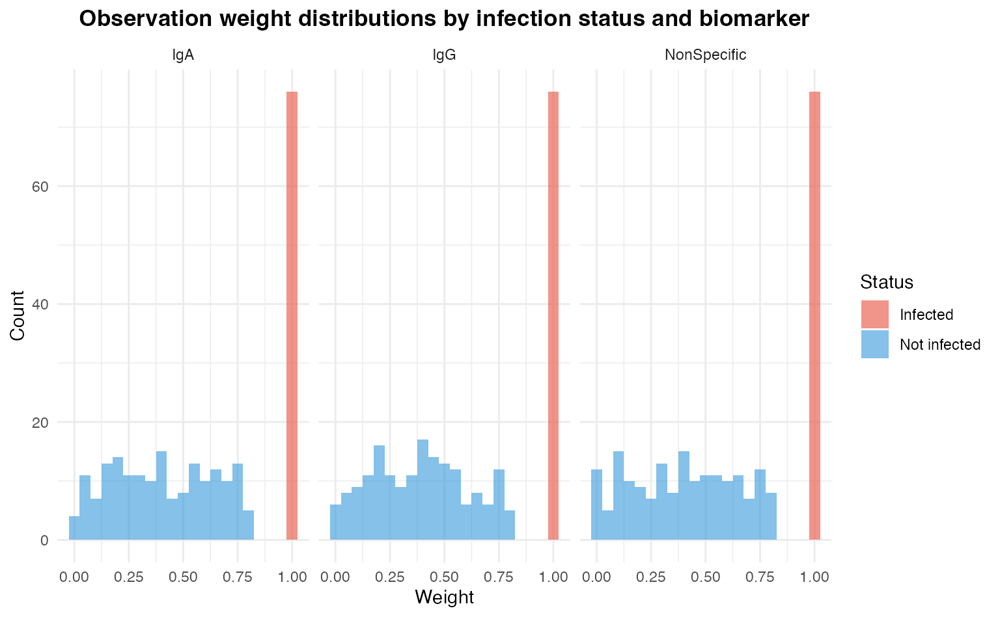

vignettes/weighted-multi-biomarker.Rmd
weighted-multi-biomarker.RmdThis vignette demonstrates how to supply biomarker-specific
observation weights to SeroCOPMulti.
Weights scale each observation’s contribution to the Bernoulli
log-likelihood in Stan — effectively giving more or less influence to
individual observations during model fitting.
A common use case is case-control up-weighting:
infected cases are given full weight (1), while
non-infected controls are given reduced, potentially varying weights
(0–0.8) to reflect sub-sampling, survey
design, or uncertainty in the non-infected group.
We demonstrate this with three simulated biomarkers:
| Biomarker | Correlate of protection? |
|---|---|
| IgG | Strong |
| IgA | Moderate |
| Non-specific | None |
n <- 250
# --- Biomarker 1: IgG (strong CoP) ---
titre_IgG <- rnorm(n, mean = 2.5, sd = 1.2)
prob_IgG <- 0.02 + 0.68 / (1 + exp(2.5 * (titre_IgG - 2.0)))
# --- Biomarker 2: IgA (moderate CoP) ---
titre_IgA <- rnorm(n, mean = 1.8, sd = 1.5)
prob_IgA <- 0.15 + 0.55 / (1 + exp(1.0 * (titre_IgA - 1.5)))
# --- Biomarker 3: Non-specific (no CoP) ---
titre_Nonspec <- rnorm(n, mean = 3.0, sd = 1.0)
prob_Nonspec <- rep(0.35, n)
# Infection outcome (driven primarily by IgG)
prob_combined <- 0.5 * prob_IgG + 0.3 * prob_IgA + 0.2 * prob_Nonspec
infected <- rbinom(n, 1, prob_combined)
cat(sprintf("Infection rate: %.1f%% (%d / %d)\n",
mean(infected) * 100, sum(infected), n))
#> Infection rate: 30.4% (76 / 250)
# Combine titres into a matrix
titres <- cbind(IgG = titre_IgG, IgA = titre_IgA, NonSpecific = titre_Nonspec)Infected observations receive a weight of 1 (full
influence). Non-infected observations receive weights drawn uniformly
from 0 to 0.8, simulating a scenario where controls are
sub-sampled or partially trusted. Weights are biomarker-specific: each
column of the weight matrix corresponds to one column of the
titre matrix.
# Initialise weight matrix — same dimensions as titres
weights_mat <- matrix(1.0, nrow = n, ncol = ncol(titres))
colnames(weights_mat) <- colnames(titres)
# Non-infected rows get uniform random weights in [0, 0.8]
non_infected_idx <- which(infected == 0)
for (j in seq_len(ncol(weights_mat))) {
weights_mat[non_infected_idx, j] <- runif(length(non_infected_idx),
min = 0, max = 0.8)
}
# Quick summary
cat("Weight summary by biomarker:\n")
#> Weight summary by biomarker:
print(round(apply(weights_mat, 2, summary), 3))
#> IgG IgA NonSpecific
#> Min. 0.003 0.004 0.002
#> 1st Qu. 0.285 0.294 0.290
#> Median 0.525 0.578 0.565
#> Mean 0.575 0.587 0.580
#> 3rd Qu. 1.000 1.000 1.000
#> Max. 1.000 1.000 1.000
weight_df <- data.frame(
weight = as.vector(weights_mat),
biomarker = rep(colnames(weights_mat), each = n),
status = rep(ifelse(infected == 1, "Infected", "Not infected"), ncol(weights_mat))
)
ggplot(weight_df, aes(x = weight, fill = status)) +
geom_histogram(binwidth = 0.05, position = "identity", alpha = 0.6) +
facet_wrap(~biomarker) +
scale_fill_manual(values = c("Infected" = "#E74C3C", "Not infected" = "#3498DB")) +
labs(
title = "Observation weight distributions by infection status and biomarker",
x = "Weight", y = "Count", fill = "Status"
) +
theme_minimal() +
theme(plot.title = element_text(hjust = 0.5, face = "bold"))
Distribution of observation weights split by infection status
Pass the weight matrix to SeroCOPMulti$new(). Each
column is automatically routed to the corresponding biomarker’s
SeroCOP sub-model, where it enters Stan as
infected | weights(obs_weights), scaling each observation’s
contribution to the log-posterior.
weighted_model <- SeroCOPMulti$new(
titre = titres,
infected = infected,
weights = weights_mat
)
weighted_model$fit_all(chains = 4, iter = 2000, warmup = 1000)Fitting an unweighted model on the same data lets us see how down-weighting non-infected controls changes parameter estimates and performance metrics.
unweighted_model <- SeroCOPMulti$new(
titre = titres,
infected = infected
)
unweighted_model$fit_all(chains = 4, iter = 2000, warmup = 1000)
weighted_model$plot_all_curves() +
labs(title = "Weighted: Correlates of Risk Curves by Biomarker")
unweighted_model$plot_all_curves() +
labs(title = "Unweighted: Correlates of Risk Curves by Biomarker")Downweighting non-infected observations has several predictable effects:
The IgG biomarker is expected to show the largest change
because it has the clearest dose-response, so the relative up-weighting
of cases amplifies that signal most noticeably.
summary_df <- merge(
weighted_metrics[, c("biomarker", "auc", "brier", "loo_elpd")],
unweighted_metrics[, c("biomarker", "auc", "brier", "loo_elpd")],
by = "biomarker", suffixes = c("_weighted", "_unweighted")
)
knitr::kable(summary_df, digits = 3,
caption = "Weighted vs. Unweighted model performance by biomarker")Key takeaways:
titre
dimensions — every biomarker can have a distinct weighting scheme.1; non-infected
controls receive random weights in [0, 0.8].target += w[i] * bernoulli_lpmf(y[i] | p[i]).weights = NULL (the default), all observations
receive equal weight and behaviour is identical to the standard
SeroCOPMulti workflow.